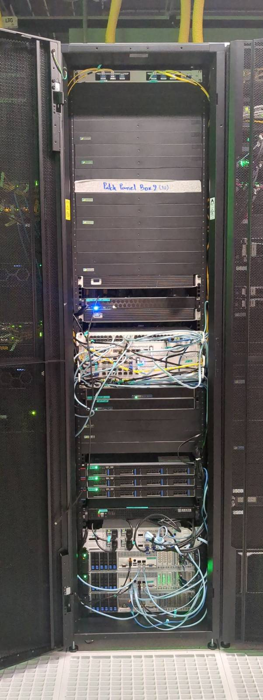
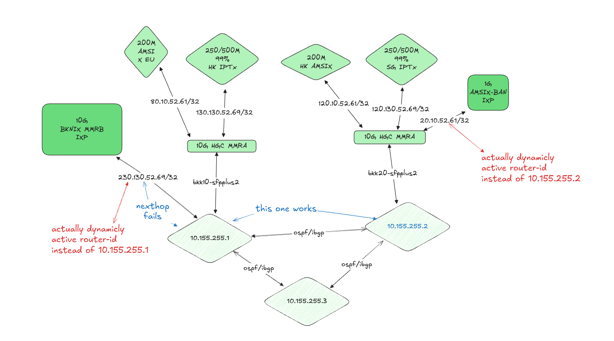
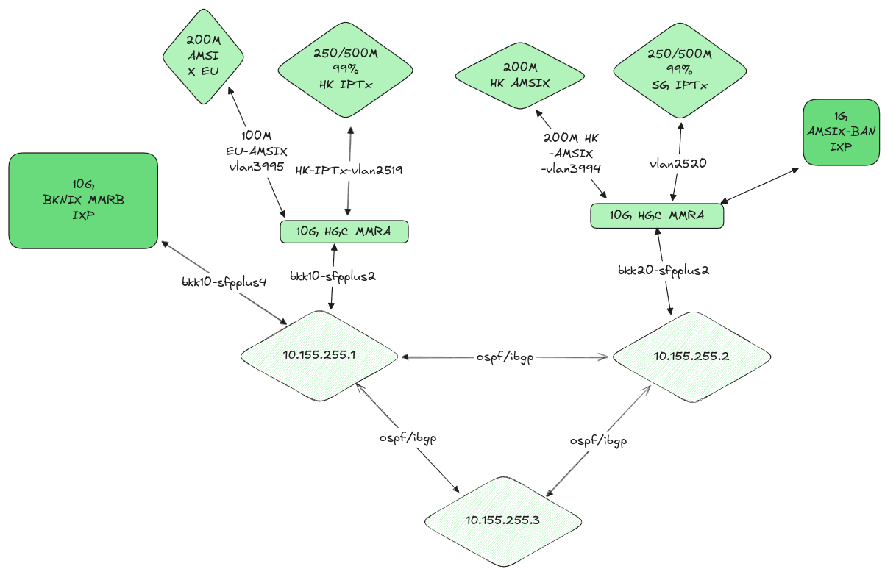

Introduction
At Rotko Networks, our commitment to powering the development and deployment of decentralized applications within the Web3 ecosystem is unwavering. In achieving this, we are dedicated to providing an infrastructure that encapsulates robust hardware, optimized to deliver top-tier performance while ensuring minimal memory latency.
Our approach to building this infrastructure transcends the conventional focus on computational capabilities. We place a similar, if not greater, emphasis on storage solutions, integrating high-speed data access systems that boast minimal latency. Furthermore, we integrate technology that guarantees data integrity, adding another layer of trust to our operations.
Our server's network robustness is another aspect we can't overemphasize. It's equipped with cutting-edge features that ensure seamless, swift, and efficient data transfer. This is a key facet of our system, as it contributes significantly to a smooth, unbroken service for end users.
Recognizing the heavy-duty nature of blockchain operations, we've carefully selected components for our server that not only meet the demand for resource-intensive applications but also have the capacity to exceed these requirements.
In the following sections, we'll delve into the specifics of the hardware that forms the backbone of our infrastructure, discussing their features, capabilities, and the reasons they've been chosen for our server operations.
Join us as we take a detailed look at our server infrastructure, designed and engineered to promote growth and foster innovation in the Web3 ecosystem. Prepare for an insightful journey into the hardware specifics that power Rotko Networks. Stay tuned!
Hardware Infrastructure

Our primary goal is to deliver a high-performance and secure blockchain infrastructure that fosters trust and reliability. We aim to achieve this by focusing on the critical elements of blockchain technology - namely, ensuring high single-thread performance for validator services, and low latency for RPC services, among others.
Network Architecture

For reference, our network topology includes the following components:
Upstream Providers
- BKNIX, AMS-IX (Bangkok, Hong Kong, Europe)
- HGC IPTX (Hong Kong, Singapore)
- Backup circuits: HGC IPTX TH-HK and TH-SG
Edge Routers
- BKK00 (MikroTik CRR2216)
- BKK20 (MikroTik CRR2216)
Core Routers
- BKK10 (MikroTik CRR2116) - VRRP Primary
- BKK50 (MikroTik CCR2004) - VRRP Fallback
Storage Infrastructure
- High-speed switches: BKK30, BKK40 (100G)
- Storage servers: BKK06 (EPYC 7713), BKK07 (EPYC 9654), BKK08 (EPYC 7742)
- HA Quorum Network for redundancy
Validator Nodes
- BKK01, BKK02 (Ryzen 5600G)
- BKK03 (Ryzen 7950X3D)
- BKK04 (Ryzen 9950X)
- BKK09 (Ryzen 7945HX)
- BKK11, BKK13 (Ryzen 5950X)
- BKK12 (Ryzen 7950X)
Management
- BKK60 (MikroTik CRS354) for IPMI access to all devices
Performance Considerations
Validator services in blockchain infrastructures demand high single-thread performance due to the nature of their operations. Validators, in essence, validate transactions and blocks within the blockchain. They act as the arbitrators of the system, ensuring the veracity and accuracy of the information being added to the blockchain. This is an intensive process that involves complex computations and encryption, thus requiring a high-performance, single-thread system to maintain efficiency.
The low latency required for our RPC services is another vital factor in our hardware design. RPC, or Remote Procedure Call, is a protocol that allows a computer program to execute a procedure in another address space, usually on another network, without the programmer needing to explicitly code for this functionality. In simpler terms, it's a way for systems to talk to each other. Low latency in these operations is crucial to ensure a smooth and seamless dialogue between various systems within the blockchain. A delay or a lag in these communications can cause bottlenecks, leading to a slowdown in overall operations.
Hardware Specifications
The hardware components and their configurations we have selected are specifically designed to address these needs. By leveraging advanced technologies like the AMD Ryzen 9 7950X for its superior single-thread performance, DDR5 memory for fast data retrieval, and NVMe SSDs for their exceptional speed in data storage and retrieval, we aim to provide an infrastructure that can effectively handle the demands of blockchain technology.
Key Components
| Node Type | Processor | Memory | Storage | Purpose |
|---|---|---|---|---|
| Validator | AMD Ryzen 7950X/5950X | DDR5 | NVMe SSDs | Transaction validation |
| Storage | AMD EPYC 7713/9654/7742 | High-capacity | Redundant arrays | Blockchain data storage |
| Edge | MikroTik CRR2216 | - | - | Network edge routing |
| Core | MikroTik CRR2116/CCR2004 | - | - | VRRP redundant core routing |
Scalability and Resilience
Our infrastructure is also designed to ensure scalability and flexibility. As the demands of the blockchain ecosystem grow, so too should our capacity to handle these increasing demands. Hence, our hardware design also incorporates elements that will allow us to easily scale up our operations when necessary.
The network features full redundancy with:
- Cross-connected edge routers with multiple upstream providers
- Geographic diversity with connections to Hong Kong, Singapore, Bangkok, and Europe
- Backup IPTX circuits for fallback connectivity
- VRRP router redundancy for core routing
- High-speed 100G storage networking
- HA Quorum Network for storage resilience
In essence, our hardware is purpose-built to deliver high-performance blockchain operations that are secure, reliable, and capable of scaling with the demands of the evolving blockchain ecosystem.
Rack

At the heart of our operations is a meticulously designed server infrastructure, securely housed within ten units of a top-tier 42U rack. Providing approximately 230 liters of computational capacity, our setup is powered by a robust dual 2kW, 220V power system that underlines our commitment to delivering superior performance and steadfast availability.
Our server infrastructure is hosted within a carrier-neutral facility, strategically enabling seamless and robust connections with a broad range of service providers, ISPs, and cloud platforms. This network versatility fosters enhanced performance and unyielding reliability, thus ensuring a consistently superior user experience.
More than a mere assembly of servers, our setup is a comprehensively designed ecosystem meticulously architected to achieve maximum efficiency. Leveraging location flexibility, our infrastructure can be configured across multiple strategic points to guarantee optimal network connectivity and minimized latency.
Direct peering arrangements with major local and international internet exchanges ensure broad bandwidth and unwavering connectivity. Coupled with floor and inter-floor cross-connect cabling, we have fostered a well-connected network capable of facilitating smooth data transfer between servers and racks.
Our infrastructure is further enhanced with a suite of cutting-edge networking devices, including industry-leading routers and switches. Services such as KVM over IP for remote server management, alongside on-site technical support and smart hands as a service, amplify our operational efficiency.
To guarantee optimal performance and longevity of our hardware, a tightly regulated environment is maintained. Our facility features controlled air temperature and humidity, ensuring the hardware operates within optimal conditions. Additionally, we have installed a UPS and backup power generators to mitigate the risk of power interruptions.
Security is paramount. Our facility, with ISO 27001 certification, employs a rigorous system of access control with logging and video surveillance, ensuring a safe and secure environment for our infrastructure. Additional safety measures such as fire alarms and smoke protection systems are in place to protect our hardware. A dedicated network operations center, operational 24/7, stands ready to promptly address any technical concerns.
Our setup also incorporates a raised floor design, an element that demonstrates our meticulous attention to detail. This design improves air distribution and cable management, leading to thermal efficiency and a well-organized operational environment.
Links
Networking Hardware Overview
Edge Routers
- CRR2216 (bkk10): Edge router for Bangkok site.
- CRR2116 (bkk20): Edge router for Bangkok site.
Core Routers
- CRR2004 (bkk50): Core router for Bangkok site.
High Availability (HA) Switches
- CSR504 (bkk30): HA switch for Bangkok site.
- CSR504 (bkk40): HA switch for Bangkok site.
BKK01 - Validator

CPU
AMD RYZEN 5 5600G 6-Core 3.7 GHz (4.6 GHz Max Boost) Socket AM4 65W
The heart of our operations, the 6-core AMD RYZEN 5 5600G, offers excellent performance for blockchain applications. It provides robust and reliable service even under demanding workloads.
CPU Cooler
For managing the thermal performance of our CPU, we use the COOLSERVER P32 CPU Cooler. It's equipped with high-quality heatpipes and can handle the Ryzen 5 5600G even under intensive workloads.
RAM
Our setup uses 2 modules of 32GB DDR4 RAM from Hynix, providing us with ample bandwidth and ensuring smooth server operations.
Motherboard
The MSI A550M-ITX/ac motherboard is an engineering marvel that brings together the performance of the consumer world with the dependability of server-grade hardware. This motherboard supports the AMD Ryzen series CPUs and DDR4 memory, promising speed, reliability, and scalability.
Storage
4x 2TB NVME Monster Storage 3D TLC SSD - R:7400Mb/s W:6,600MB/s
For storage, we use 4 Monster Storage 3D TLC NVMe SSDs, each of 2TB capacity. These high-speed SSDs are known for their exceptional performance and efficiency in data storage and retrieval.
Power unit
This second-hand case comes with an integrated 400W Power Supply Unit. The PSU is essential for providing power to your internal components. It converts the power from the wall outlet into a usable form for your computer's components. Despite being second-hand, the PSU is in good condition and will provide a reliable power source for your system.
Chassis
This second-hand case comes with an integrated 400W Power Supply Unit. The PSU is essential for providing power to your internal components. It converts the power from the wall outlet into a usable form for your computer's components. Despite being second-hand, the PSU is in good condition and will provide a reliable power source for your system.
KVM
BliKVM v1 CM4 "KVM over IP" Raspberry Pi CM4 HDMI CSI PiKVM v3
A modern, highly secure, and programmable KVM solution running on Arch Linux, which provides exceptional control over your server, akin to physical access. With an easy build process, it boasts minimal video latency (about 100 ms) and a lightweight Web UI accessible from any browser. It emulates mass storage drives and allows ATX power management, secure data transmission with SSL, and local Raspberry Pi health monitoring. You can also manage GPIO and USB relays via its web interface. The PiKVM OS is production-ready, supports a read-only filesystem to prevent memory card damage, offers extensible authorization methods, and enables automation with macros.
Features of PiKVM:
- Fully-featured and modern IP-KVM: PiKVM is up-to-date with the latest KVM technologies.
- Easy to build: PiKVM offers ready-to-use OS images and a friendly build environment.
- Low video latency: With approximately 100 milliseconds of video latency, it provides one of the smallest delays of all existing solutions.
- Lightweight Web UI and VNC: The user interface is accessible through any browser, with no proprietary clients required. VNC is also supported.
- Mass Storage Drive Emulation: On Raspberry Pi 4 and ZeroW, PiKVM can emulate a virtual CD-ROM or Flash Drive. A live image can be uploaded to boot the attached server.
- ATX power management: PiKVM supports simple circuits for controlling the power button of the attached server.
- Security: PiKVM is designed with strong security, using SSL to protect traffic.
- Local monitoring: PiKVM monitors the health of the Raspberry Pi board and provides warnings for potential issues.
- GPIO management: Control GPIO and USB relays via the web interface.
- Production-ready: PiKVM OS is based on Arch Linux ARM and can be customized for any needs.
- Read-only filesystem: The OS runs in read-only mode to prevent damage to the memory card due to a sudden power outage.
- Extensible authorization methods: PiKVM supports integration into existing authentication infrastructure.
- Macro scripts: Repetitive actions can be automated with keyboard & mouse action macros.
- Open & free: PiKVM is open-source software, released under the GPLv3.
BKK02 - Validator 2

CPU
AMD RYZEN 5 5600G 6-Core 3.7 GHz (4.6 GHz Max Boost) Socket AM4 65W
The heart of our operations, the 6-core AMD RYZEN 5 5600G, offers excellent performance for blockchain applications. It provides robust and reliable service even under demanding workloads.
CPU Cooler
For managing the thermal performance of our CPU, we use the COOLSERVER P32 CPU Cooler. It's equipped with high-quality heatpipes and can handle the Ryzen 5 5600G even under intensive workloads.
RAM
Our setup uses 2 modules of 32GB DDR4 RAM from Hynix, providing us with ample bandwidth and ensuring smooth server operations.
Motherboard
The MSI A520M-ITX/ac motherboard is an engineering marvel that brings together the performance of the consumer world with the dependability of server-grade hardware. This motherboard supports the AMD Ryzen series CPUs and DDR4 memory, promising speed, reliability, and scalability.
Storage
4x 2TB NVME Monster Storage 3D TLC SSD - R:7400Mb/s W:6,600MB/s
For storage, we use 4 Monster Storage 3D TLC NVMe SSDs, each of 2TB capacity. These high-speed SSDs are known for their exceptional performance and efficiency in data storage and retrieval. Downside is that lacks DRAM for caching.
Power unit
This second-hand case comes with an integrated 400W Power Supply Unit. The PSU is essential for providing power to your internal components. It converts the power from the wall outlet into a usable form for your computer's components. Despite being second-hand, the PSU is in good condition and will provide a reliable power source for your system.
Chassis
This second-hand case comes with an integrated 400W Power Supply Unit. The PSU is essential for providing power to your internal components. It converts the power from the wall outlet into a usable form for your computer's components. Despite being second-hand, the PSU is in good condition and will provide a reliable power source for your system.
KVM
BliKVM v1 CM4 "KVM over IP" Raspberry Pi CM4 HDMI CSI PiKVM v3
A modern, highly secure, and programmable KVM solution running on Arch Linux, which provides exceptional control over your server, akin to physical access. With an easy build process, it boasts minimal video latency (about 100 ms) and a lightweight Web UI accessible from any browser. It emulates mass storage drives and allows ATX power management, secure data transmission with SSL, and local Raspberry Pi health monitoring. You can also manage GPIO and USB relays via its web interface. The PiKVM OS is production-ready, supports a read-only filesystem to prevent memory card damage, offers extensible authorization methods, and enables automation with macros.
Features of PiKVM:
- Fully-featured and modern IP-KVM: PiKVM is up-to-date with the latest KVM technologies.
- Easy to build: PiKVM offers ready-to-use OS images and a friendly build environment.
- Low video latency: With approximately 100 milliseconds of video latency, it provides one of the smallest delays of all existing solutions.
- Lightweight Web UI and VNC: The user interface is accessible through any browser, with no proprietary clients required. VNC is also supported.
- Mass Storage Drive Emulation: On Raspberry Pi 4 and ZeroW, PiKVM can emulate a virtual CD-ROM or Flash Drive. A live image can be uploaded to boot the attached server.
- ATX power management: PiKVM supports simple circuits for controlling the power button of the attached server.
- Security: PiKVM is designed with strong security, using SSL to protect traffic.
- Local monitoring: PiKVM monitors the health of the Raspberry Pi board and provides warnings for potential issues.
- GPIO management: Control GPIO and USB relays via the web interface.
- Production-ready: PiKVM OS is based on Arch Linux ARM and can be customized for any needs.
- Read-only filesystem: The OS runs in read-only mode to prevent damage to the memory card due to a sudden power outage.
- Extensible authorization methods: PiKVM supports integration into existing authentication infrastructure.
- Macro scripts: Repetitive actions can be automated with keyboard & mouse action macros.
- Open & free: PiKVM is open-source software, released under the GPLv3.
BKK03 - Bootnode/RPC

CPU: AMD Ryzen™ 9 7950X3D 16-Core 32-Thread 5NM
Product Link
The AMD Ryzen 9 7950X3D, with its 16-core 32-thread architecture, is the driving force behind our server's high performance. The CPU's multi-core design and high clock speeds are specifically optimized for blockchain applications, ensuring efficient chain synchronization and reliable endpoint service.
Featuring advanced technologies like PCI Express® 5.0 and DDR5, the CPU provides rapid data transfer, essential for low-latency blockchain transactions. The large 128MB L3 cache further bolsters performance by facilitating quick access to frequently used data, enhancing efficiency.
CPU Cooling System

COOLSERVER P32 CPU Cooler
Thermalright aluminium alloy AM5 frame
Cooling efficiency is paramount in maintaining stable performance. Our server utilizes the COOLSERVER P32 AM5 Server CPU Cooler, in conjunction with the Thermalright AM5 frame, to maximize cooling capabilities.
Motherboard: AsRock Rack B650D4U-2L2T/BCM(LGA 1718) Dual 10G LAN
Product Link
This Micro-ATX motherboard stands as a testament to AsRock's engineering prowess, blending high-performance consumer technology with the robustness of server-grade hardware. The board offers full PCIe 5.0 support and features up to 7 M.2 slots for NVMe storage, enhancing data transfer speeds. Its compatibility with DDR5 ECC UDIMM memory further underlines its suitability for demanding server applications.
Memory: 4x 32GB MICRON DDR5 UDIMM/ECC 4800MHz
Product Link
Our selection of server-grade DDR5 memory modules provides substantial bandwidth for smooth server operations. Equipped with ECC technology, these modules maintain data integrity, ensuring the reliability of our transactions.
SSD Expansion: NVMe PCIe RAID Adapter 4 Ports NVME SSD to PCI-E 4.0 X16
This expansion card plays a vital role in our data management strategy by enabling the integration of top-tier NVMe SSDs. It contributes to our server's responsiveness by facilitating faster access to stored data.
Storage: 5x 2TB Hanye ME70 NVMe PCI-E4.0 7200mb/s
Product Link
Our system's storage is equipped with 2TB High-Performance ME70 M.2 NVMe SSDs, providing 12TB of high-speed storage. The SSDs' Gen4 PCIe tech and LDPC error correction ensure quick data access and integrity.
Benchmarks
2023-07-31 13:55:08 Running machine benchmarks...
2023-07-31 13:55:34
+----------+----------------+-------------+-------------+-------------------+
| Category | Function | Score | Minimum | Result |
+===========================================================================+
| CPU | BLAKE2-256 | 1.56 GiBs | 783.27 MiBs | ✅ Pass (203.8 %) |
|----------+----------------+-------------+-------------+-------------------|
| CPU | SR25519-Verify | 788.10 KiBs | 560.67 KiBs | ✅ Pass (140.6 %) |
|----------+----------------+-------------+-------------+-------------------|
| Memory | Copy | 27.73 GiBs | 11.49 GiBs | ✅ Pass (241.3 %) |
|----------+----------------+-------------+-------------+-------------------|
| Disk | Seq Write | 2.99 GiBs | 950.00 MiBs | ✅ Pass (322.0 %) |
|----------+----------------+-------------+-------------+-------------------|
| Disk | Rnd Write | 1.29 GiBs | 420.00 MiBs | ✅ Pass (313.4 %) |
+----------+----------------+-------------+-------------+-------------------+
From 5 benchmarks in total, 5 passed and 0 failed (10% fault tolerance).
2023-07-31 13:55:34 The hardware meets the requirements
Read Latency Statistics in nanoseconds:
-------------------------
Minimum: 520 ns
Maximum: 22540 ns
Mean: 914.595734 ns
Standard Deviation: 222.087316 ns
Read IOPS: 953140.861971
Chassis: 1U Case, TGC H1-400
Product Link
Power Supply Unit: 400W Compuware 80 PLUS Platinum PSU
Vendor Link
KVM: Asrock Rack BCM/IPMI
The AsRock Rack motherboard includes a BCM for remote control, offering robust management capabilities.
BKK04 - Bootnode/RPC

CPU
Model: AMD Ryzen 9 7950X R9 7950X CPU Processor 16-Core 32-Thread 5NM L3=64M Socket AM5
- Core Count: 16 cores
- Technology: 5NM process
- L3 Cache: 64MB
- PCI Express: 5.0
- Memory Support: DDR5
Capabilities: Designed to manage multiple tasks with ease, such as running multiple networks simultaneously, efficient blockchain sync, and low latency transactions.
CPU Cooler
- Model: COOLSERVER R64 AM5 Server CPU Cooler
- Design: 4 high-quality heatpipes, 150W TDP, double ball bearing
- Enhancement: Thermalright aluminium alloy AM5 frame
Motherboard
 Model: AsRock Rack B650D4U(LGA 1718)
Model: AsRock Rack B650D4U(LGA 1718)
- Form Factor: Micro-ATX
- Memory Support: DDR5 ECC UDIMM
- PCIe Slots: Full PCIe 5.0 support, M.2 slot, x16 slot, and x4 slot
- Storage Support: Up to 7 M.2 slots
Memory
Model: 4x Server Memory Module|MICRON|DDR5|32GB|UDIMM/ECC|4800MHz|CL 40|1.1V|MTC20C2085S1EC48BA1R
- Capacity: 4 modules of 32GB DDR5 each
- Technology: ECC for increased data integrity
- Performance: Low-latency
SSD Expansion Cards

- Model: NVMe SSD Expansion Card NVMe PCIe RAID Adapter 4 Ports NVME SSD To PCI-E 4.0 X16 Expansion Card
Storage
- Primary Storage: 6x 2TB Samsung SSD Pro 980
- Backup Storage: 3x 16TB disks in ZFS RAIDZ (32TB total)
Benchmarks
``+----------+----------------+-------------+-------------+-------------------+
| Category | Function | Score | Minimum | Result |
+===========================================================================+
| CPU | BLAKE2-256 | 1.65 GiBs | 783.27 MiBs | ✅ Pass (215.8 %) |
|----------+----------------+-------------+-------------+-------------------|
| CPU | SR25519-Verify | 832.82 KiBs | 560.67 KiBs | ✅ Pass (148.5 %) |
|----------+----------------+-------------+-------------+-------------------|
| Memory | Copy | 16.99 GiBs | 11.49 GiBs | ✅ Pass (147.9 %) |
|----------+----------------+-------------+-------------+-------------------|
| Disk | Seq Write | 2.09 GiBs | 950.00 MiBs | ✅ Pass (225.3 %) |
|----------+----------------+-------------+-------------+-------------------|
| Disk | Rnd Write | 885.35 MiBs | 420.00 MiBs | ✅ Pass (210.8 %) |
+----------+----------------+-------------+-------------+-------------------+
From 5 benchmarks in total, 5 passed and 0 failed (10% fault tolerance).
2023-08-03 00:49:00 The hardware meets the requirements
Read Latency Statistics in nanoseconds:
-------------------------
Minimum: 460 ns
Maximum: 535014 ns
Mean: 968.885148 ns
Standard Deviation: 280.737214 ns
99.99th Percentile Read Latency: 350 ns
-------------------------
Read IOPS: 906996.500117
The read latency meets the 2000 ns and lower QoS requirement
Chassis
- Model: TGC-24550 2U
- Design: 2U rackmount, efficient airflow design
Power Supply Unit
- Model: T.F.SKYWINDINTL 1U MINI Flex ATX Power Supply Unit 400W Modular PSU
- Capacity: 400W
- Features: Built-in cooling fan, overcurrent, overvoltage, and short-circuit protection
KVM
- Model: Asrock Rack BCM/IPMI for remote control
Summary
The BKK04 Bootnode leverages a combination of cutting-edge components to deliver high performance, reliability, and scalability. From the AMD Ryzen 9 7950X processor with 32 threads high core clock cycles to the efficient memory and robust storage solutions, every part of this server is designed to handle demanding server applications, particularly those related to blockchain processing. The use of advanced cooling and power supply units ensures long-term sustainability and stable operation. All components have been chosen as well to be most energy efficient solutions that market can currently provide.
BKK05: Pioneering RISC-V Debian Webhosting
Introduction
Welcome to the frontier of web hosting with our BKK05 server, a trailblazing platform powered by the RISC-V Debian. This server represents not just a shift in technology but an experimental leap into the future of open-source computing.

Technical Specifications
| Component | Specifications |
|---|---|
| Processor | StarFive JH7100 64bit SoC with RV64GC, up to 1.5GHz |
| Memory | LPDDR4, Configurable up to 8GB |
| Storage | 2TB Samsung 980 NVMe |
| Networking | Dual RJ45 Gigabit Ethernet |
| Expansion | M.2 M-Key for NVMe SSDs |
| USB Ports | 2x USB 2.0 + 2x USB 3.0 |
| Video Out | HDMI 2.0, supporting 4K resolution |
Performance
The BKK05 server is equipped with a VisionFive 2 SBC at its core, featuring a StarFive JH7110 SoC. With 8GB of LPDDR4 RAM and a 2TB Samsung 980 NVMe drive, it's designed to handle web hosting and experimental server tasks with ease. Its RISC-V architecture ensures an open and versatile computing experience.
RISC-V Debian: The New Era
RISC-V brings a breath of fresh air to the server landscape, offering an open ISA (Instruction Set Architecture) that fosters innovation. Debian's adoption of RISC-V for our BKK05 server underpins our commitment to pioneering technology and community-driven development.
Web Hosting Capabilities
BKK05 runs Debian 12 (Bookworm), optimized for the RISC-V architecture. The server's configuration, which includes a robust 2TB NVMe drive, is particularly suited for web hosting, offering rapid data retrieval and ample storage for web applications.
Experimental Projects
The open nature of RISC-V and Debian makes BKK05 the perfect candidate for experimental projects. Its platform is ideal for developers looking to explore the capabilities of RISC-V architecture and contribute to the growth of the ecosystem.
Conclusion
The BKK05 server is a testament to our commitment to embracing open and innovative technologies. By leveraging the power of RISC-V Debian, we provide a stable and forward-thinking web hosting service while also contributing to an exciting new chapter in computing.
BKK06 - Bootnode/RPC

BKK06 - High-Performance Bootnode/RPC Server
The BKK06 server stands at the vanguard of our infrastructure, specifically tailored to function as a bootnode and RPC server. It's built around the AMD EPYC™ 7742 CPU and designed to deliver fine performance for RPC, bootnode and computational tasks.
CPU
Model: AMD EPYC™ 7742
- Core Count: 64 cores
- Threads: 128
- Max. Boost Clock: Up to 3.4GHz
- Base Clock: 2.25GHz
- L3 Cache: 256MB
- TDP: 225W
Cooler
Model: COOLSERVER AMD SP5 S21 Server CPU Cooler 350W 6 Copper Tubes
Capabilities: Tailored to handle high-concurrency workloads, the EPYC™ 7742 is perfect for bootnode operations and RPC handling, offering rapid data processing and low-latency networking.
Motherboard
Model: Supermicro H11SSL-i
- Chipset: System on Chip
- Form Factor: E-ATX
- Memory Slots: 8 x DIMM slots supporting DDR4
Capabilities: With 8 memory channels and support for up to 8 DDR4 ECC memory modules, the motherboard is currently populated with 8 x Micron 32GB ECC Registered DDR4 memory modules, providing a total of 256GB of memory.
Memory
Model: Micron 32GB ECC Registered DDR4 3200
- Capacity: 8 modules
- Technology: ECC Registered for increased reliability
- Speed: 3200MHz
Storage
Primary Storage:
- 2x Samsung SSD 980 PRO 2TB NVMe (Configured in RAID for boot/root)
- 4x Samsung SSD 990 PRO 4TB NVMe (For data)
Capabilities: The Samsung 980 PRO drives ensure reliable boot and root operations with RAID configuration, while the 990 PRO drives offer swift read/write speeds and robust endurance for intensive data demands of a bootnode and RPC server.
Connectivity
LAN:
- eno1: 10Gb/s BASE-T LAN port
- eno2: 10Gb/s BASE-T LAN port
Management Port: 1 x Dedicated management port
Board Management Controller (BMC)
BMC Model: Aspeed® AST2500
- Capabilities: Integrated BMC with Aspeed® AST2500 GPU offers comprehensive remote management capabilities, including KVM over IP, enabling administrators to manage the server efficiently and securely.
Chassis and Power Supply Unit (PSU)
Chassis: Supermicro Main Server Chassis PSU: Greatwall Dual PSU 2U 1+1 CRPS redundant 800W
This updated configuration should accurately reflect the setup and capabilities of your BKK06 - High-Performance Bootnode/RPC Server.
BKK07 - Bootnode/RPC

BKK07 - High-Performance Bootnode/RPC Server
The BKK07 server stands at the vanguard of our infrastructure, specifically tailored to function as a bootnode and RPC server. It's built around the AMD EPYC™ 9654 CPU and designed to deliver unmatched performance for blockchain and high-computational tasks.
CPU
Model: AMD EPYC™ 9654
- Core Count: 96 cores
- Threads: 192
- Max. Boost Clock: Up to 3.7GHz
- Base Clock: 2.4GHz
- L3 Cache: 384MB
- TDP: 360W (Configurable TDP 320-400W)
Cooler
Model: COOLSERVER AMD SP5 S21 Server CPU Cooler 350W 6 Copper Tubes
Capabilities: Tailored to handle high-concurrency workloads, the EPYC™ 9654 is perfect for bootnode operations and RPC handling, offering rapid data processing and low-latency networking.
Motherboard
Model: Supermicro H13SSL-N
- Chipset: System on Chip
- Form Factor: ATX
- Memory Slots: 12 x DIMM slots supporting DDR5
Capabilities: With 12 memory channels and support for up to 24 DDR5 ECC memory modules, the motherboard is currently populated with 6 x SuperMicro 64GB ECC Registered DDR5 memory modules in a 6-channel configuration, primed for an upgrade to a full 12-channel setup to enhance data throughput and server responsiveness.
Memory
Model: SuperMicro 64GB ECC Registered DDR5 4800
- Capacity: Currently 6 modules (to be expanded to 12)
- Technology: ECC Registered for increased reliability
- Speed: 4800MHz (running at 57600MHz for full 12-channel bandwidth)
Note: Under the SuperMicro brand, actual chip running is HMCG94MEBRA109N AA SKhynix DDR5 64GB SKhynix-Montage 2Rx4 1.1v 4800MHz ECC Registered 288-pin.
Storage
Primary Storage: 5x SAMSUNG 990 PRO M.2 2280 4TB NVMe
- Sequential Read/Write Speeds: Up to 7,450/6,900 MB/s
- Random Read/Write Speeds (IOPS): Up to 1,600K/1,550K for 4TB
- Interface: PCI-Express Gen 4.0 x4
- Technology: NVMe 2.0 V-NAND
- Form Factor: M.2 2280
Capabilities: The Samsung 990 PRO drives are renowned for their swift read/write speeds and robust endurance, making them ideal for the intensive data demands of a bootnode and RPC server. +400K R/W IOPS per Terabyte is something ANY cloud provider ain't capable provide for whatever price you were willing to pay.
Connectivity
- LAN: Dual 10Gb/s BASE-T LAN ports (Broadcom® BCM57416)
- Management Port: 1 x Dedicated management port
Board Management Controller (BMC)
- BMC Model: Aspeed® AST2600
- Capabilities: Integrated BMC with Aspeed® AST2600 GPU offers comprehensive remote management capabilities, including KVM over IP, enabling administrators to manage the server efficiently and securely.
Chassis and Power Supply Unit (PSU)
- Chassis: Ultra Short 2U rackmount Server Chassis S24306 with six 2.5 ssd bays support eatx dual processor board
- PSU: Greatwall Dual PSU 2U 1+1 CRPS redundant 800W
BKK08 - RPC

BKK08 - High-Performance Bootnode/RPC Server
The BKK08 server stands at the vanguard of our infrastructure, specifically tailored to function as a bootnode and RPC server.
CPU
Model: AMD EPYC™ 7773X
Cooler
Model:
Motherboard
Model: Supermicro NOTSURE
- Chipset: System on Chip
- Form Factor: ATX
- Memory Slots: 8 x DIMM slots supporting DDR4
Capabilities: With 8 memory channels and supporting up to 256GB of DDR4 memory, the Supermicro
Memory
Storage
Primary Storage: 4x SAMSUNG 990 PRO M.2 2280 4TB NVMe
- Sequential Read/Write Speeds: Up to 7,450/6,900 MB/s
- Random Read/Write Speeds (IOPS): Up to 1,600K/1,550K for 4TB
- Interface: PCI-Express Gen 4.0 x4
- Technology: NVMe 2.0 V-NAND
- Form Factor: M.2 2280
Capabilities: The
Connectivity
- NIC Card: Dual 100Gb/s ports NIC card
- LAN: Dual 10Gb/s BASE-T LAN ports (Broadcom® BCM57416)
- Management Port: 1 x Dedicated management port
Board Management Controller (BMC)
- BMC Model: Aspeed® AST2500
Chassis and Power Supply Unit (PSU)
- Chassis: Ultra Short 2U rackmount Server Chassis S24306 with six 2.5 ssd bays support eatx dual processor board
- PSU: Greatwall Dual PSU 2U 1+1 CRPS redundant 800W
Software Infrastructure
Our infrastructure leverages several powerful technologies and platforms to provide a robust and efficient environment for our operations.
Debian
Our servers run on Debian, a highly stable and reliable Linux-based operating system. Debian provides a strong foundation for our operations, with its wide array of packages, excellent package management system, and strong community support. Its stability and robustness make it an excellent choice for our server environments.
Proxmox Virtual Environment
We utilize Proxmox, an open-source server virtualization management solution. Proxmox allows us to manage virtual machines, containers, storage, virtualized networks, and HA clustering from a single, integrated platform. This is crucial in ensuring we have maximum control and efficiency in managing our various server processes. We utilize linux 6.1 lts pve kernel.
LXC (Linux Containers)
We leverage LXC (Linux Containers) to run multiple isolated Linux systems (containers) on a single host. This containerization technology provides us with lightweight, secure, and performant alternatives to full machine virtualization.
ZFS
ZFS, the Zettabyte File System, is an advanced filesystem and logical volume manager. It was designed to overcome many of the major issues found in previous designs and is used for storing data in our Proxmox environment. It provides robust data protection, supporting high storage capacities and efficient data compression, and allows us to create snapshots and clones of our filesystem.
Ansible
We use Ansible for automation of our system configuration and management tasks. Ansible enables us to define and deploy consistent configurations across multiple servers, and automate routine maintenance tasks, thus increasing efficiency and reducing the risk of errors.
MikroTik RouterOS
Our network infrastructure relies on MikroTik RouterOS, a robust network operating system. This system offers a variety of features such as routing, firewall, bandwidth management, wireless access point, backhaul link, hotspot gateway, VPN server, and more. This helps us ensure secure, efficient, and reliable network operations.
All these technologies are intertwined, working together to support our operations. They are chosen not just for their individual capabilities, but also for their compatibility and interoperability, creating an integrated, efficient, and reliable software infrastructure.
Network Configuration Documentation
Overview
This document outlines the BGP routing configuration for our multi-homed network with connections to various internet exchanges and transit providers in Bangkok, Hong Kong, Singapore, and Europe. Currently 3x 10G fibers are used for physical uplinks.
Bandwidth

Network Topology Diagram
graph TD
BKK50((BKK50 Gateway Router<br>CCR2004-16G-2S+<br>ECMP with 10G connections))
BKK50 --> |10G| BKK20
BKK50 --> |10G| BKK10
subgraph BKK20[BKK20 Edge Router<br>CCR2216-1G-12XS-2XQ]
B20_AMSIX[AMSIX-LAG<br>10G Physical Port]
end
subgraph BKK10[BKK10 Edge Router<br>CCR2116-12G-4S+]
B10_AMSIX[AMSIX-LAG<br>10G Physical Port]
B10_BKNIX[BKNIX-LAG<br>10G Physical Port]
end
B20_AMSIX --> |VLAN 911<br>1G| AMS_IX_BKK[AMS-IX Bangkok]
B20_AMSIX --> |VLAN 3994<br>200M| AMS_IX_HK[AMS-IX Hong Kong]
B20_AMSIX ==> |VLAN 2520<br>500M<br>Active| IPTX_SG[IPTX Singapore]
B20_AMSIX -.-> |VLAN 2517<br>500M<br>Passive| IPTX_HK[IPTX Hong Kong]
B10_AMSIX ==> |VLAN 2519<br>500M<br>Active| IPTX_HK
B10_AMSIX -.-> |VLAN 2518<br>500M<br>Passive| IPTX_SG
B10_AMSIX --> |VLAN 3995<br>100M| AMS_IX_EU[AMS-IX Europe]
B10_BKNIX --> |10G| BKNIX[BKNIX]
AMS_IX_BKK --> INTERNET((Internet))
AMS_IX_HK --> INTERNET
AMS_IX_EU --> INTERNET
IPTX_SG --> INTERNET
IPTX_HK --> INTERNET
BKNIX --> INTERNET
classDef router fill:#1a5f7a,color:#ffffff,stroke:#333,stroke-width:2px;
classDef ix fill:#4d3e3e,color:#ffffff,stroke:#333,stroke-width:2px;
classDef internet fill:#0077be,color:#ffffff,stroke:#333,stroke-width:2px;
classDef active stroke:#00ff00,stroke-width:4px;
classDef passive stroke:#ff0000,stroke-dasharray: 5 5;
class BKK50,INTERNET internet;
class BKK20,BKK10 router;
class AMS_IX_BKK,AMS_IX_HK,AMS_IX_EU,IPTX_SG,IPTX_HK,BKNIX ix;
linkStyle default stroke:#ffffff,stroke-width:2px;
Routing Configuration
| Name | Speed | Path Prepend | MED | Local Pref | External Communities | Description | Router |
|---|---|---|---|---|---|---|---|
| BKNIX | 10G | 0 | 10 | 200 | 142108:1:764 | Local IX | BKK10 |
| AMS-IX Bangkok | 1G | 0 | 20 | 190 | 142108:1:764 | Local IX | BKK20 |
| IPTX Singapore-BKK10 | 500M | 1 | 50 | 170 | 142108:2:35 | Regional Transit | BKK10 |
| IPTX Singapore-BKK20 | 500M | 1 | 50 | 160 | 142108:2:35 | Regional Transit | BKK20 |
| AMS-IX Hong Kong | 200M | 2 | 100 | 150 | 142108:2:142 | Regional IX | BKK20 |
| IPTX HK-BKK20 | 500M | 2 | 100 | 130 | 142108:2:142 | Regional Transit | BKK20 |
| IPTX HK-BKK10 | 500M | 2 | 100 | 120 | 142108:2:142 | Regional Transit | BKK10 |
| AMS-IX EU | 100M | 3 | 200 | 100 | 142108:2:142 | Remote IX | BKK10 |
This way:
- We keep our internal communities for our own routing decisions
- We share geographic information allowing peers to optimize their routing
- Peers can make informed decisions about traffic paths to our network
Would this be a useful approach?
Traffic Engineering Principles
- Local Preference: Higher values indicate more preferred routes. Local routes are preferred over regional, which are preferred over remote routes.
- MED (Multi-Exit Discriminator): Lower values are preferred. Used to influence inbound traffic when other attributes are equal.
- AS Path Prepending: Increases AS path length to make a route less preferred. Used for coarse control of inbound traffic.
Firmware Updates
Samsung 980Pro NVMe
wget https://semiconductor.samsung.com/resources/software-resources/Samsung_SSD_980_PRO_5B2QGXA7.iso
apt-get -y install gzip unzip wget cpio
mkdir /mnt/iso
sudo mount -o loop ./Samsung_SSD_980_PRO_5B2QGXA7.iso /mnt/iso/
mkdir /tmp/fwupdate
cd /tmp/fwupdate
gzip -dc /mnt/iso/initrd | cpio -idv --no-absolute-filenames
cd root/fumagician/
sudo ./fumagician
This .iso is for 980 Pro, if you have different model replace ISO with link on https://semiconductor.samsung.com/consumer-storage/support/tools/
ASRock Rack Motherboard
This guide outlines the steps to update the firmware on your ASRock Rack motherboard. The update includes the BIOS, BMC (Baseboard Management Controller), and the networking firmware.
Before starting, download the following files:
BIOS Update
ASRock Rack provides a BIOS flash utility called ASRock Rack Instant Flash, embedded in the Flash ROM, to make the BIOS update process simple and straightforward.
-
Preparation: Format a USB flash drive with FAT32/16/12 file system and save the new BIOS file to your USB flash drive.
-
Access ASRock Rack Instant Flash: Restart the server and press the
<F6>key during the POST or the<F2>key to enter the BIOS setup menu. From there, access the ASRock Rack Instant Flash utility. -
Update BIOS: Follow the instructions provided by the utility to update the BIOS.
BMC Firmware Update
In order to keep your BMC firmware up-to-date and have the latest features and improvements, regular updates are recommended. This guide provides step-by-step instructions on how to update your BMC firmware.
-
Preparation: Download the correct BMC firmware update file from the ASRock Rack website. Ensure the firmware version is later than the one currently installed on your device. Save the firmware file on your local system.
-
Access BMC Maintenance Portal: Open your web browser and navigate to the BMC maintenance portal using the IP address of the BMC. Typically, the URL is https://[BMC IP Address]/#maintenance/firmware_update_wizard, for instance, https://192.168.33.114/#maintenance/firmware_update_wizard.
-
Login: Use your BMC username and password to log into the portal.
-
Firmware Update Section: Navigate to the firmware update section.
-
Upload Firmware Image: Click on "Select Firmware Image" and upload the firmware file you downloaded earlier. The firmware files typically end with
.ima. For instance,B650D4U_2L2T_4.01.00.ima. -
Preserve Configuration: If you want to preserve all the current configurations during the update, check the box "Preserve all Configuration". This will maintain all the settings irrespective of the individual items marked as preserve/overwrite in the table below.
-
Start Update: Click "Firmware Update". The system will validate the image and if successful, the update process will start. The progress will be shown on the screen.
-
Reboot: Once the update is completed, the system will reboot automatically.
WARNING: Please note that after entering the update mode, other web pages, widgets, and services will not work. All the open widgets will be automatically closed. If the update is cancelled in the middle of the process, the device will be reset only for BMC BOOT, and APP components of Firmware.
NOTE: The IP address used in this guide is an example. Replace it with the actual IP address of your BMC. Also, remember to use a reliable network connection during the update process to prevent any interruption.
Networking Firmware Update
-
Preparation: Format a USB flash drive and copy the "bnxtmt-lite-uefi-221.0.117.0-x64" folder from the downloaded Broadcom 57416 LAN Flashing Firmware onto it.
-
Access UEFI Shell: Insert the USB flash drive into your ASRock Rack server board, reboot the server, and hit F11 at the POST screen. Select "UEFI: Built-in EFI Shell". The USB flash drive should be named
FS0:. TypeFS0:and press enter.
-
Verify Current Firmware Version: Execute
bnxtmt.efito display the current firmware version.
-
Erase the Flash: Navigate to the "bnxtmt-lite-uefi-221.0.117.0-x64" folder and execute
bnxtmt.efi -sysop -none -no_swap –blankto erase the current firmware.
-
Flash the Firmware: Execute
bnxtmt.efi -sysop -none -no_swap -fnvm ASRR57416-2T.PKG -log FW1.logto flash the new firmware. Here,ASRR57416-2T.PKGis the firmware file.
-
Verify Updated Firmware Version: Run
bnxtmt.efiagain to verify the new firmware version.
-
Flash LAN Ports' MAC Addresses: Execute
bnxtmt.efi -none –m -log MAC1.log.
-
Input MAC Addresses: Enter the MAC addresses of both LAN ports when prompted. Write down these addresses beforehand.

-
Power Cycle: Turn off the system, power cycle the PSU, and then power everything back on.
Note: The MAC addresses for your LAN ports are crucial. Write them down before starting the update process as they need to be added during the command at step 8.
Proxmox Network Configuration Guide
Overview
Networking in Proxmox is managed through the Debian network interface
configuration file at /etc/network/interfaces. This guide will walk you
through the process of configuring the network interfaces and creating a Linux
bridge for your Proxmox server.
Pre-requisites:
Before we begin, you should have:
- A Proxmox VE installed and configured on your server.
- Administrative or root access to your Proxmox VE server.
Step 1: Understand Proxmox Network Configuration Files
Proxmox network settings are mainly configured in two files:
/etc/network/interfaces: This file describes the network interfaces available on your system and how to activate them. This file is critical for setting up bridged networking or configuring network interfaces manually./etc/hosts: This file contains IP address to hostname mappings.
Step 2: Configure Primary Network Interface
First, open the network interfaces configuration file for editing:
Set your primary network interface (e.g., enp9s0) to manual:
nano /etc/network/interfaces
auto enp9s0
iface enp9s0 inet manual
Step 3: Configure Linux Bridge
Next, create a Linux bridge (vmbr0):
auto vmbr0
iface vmbr0 inet static
address 192.168.69.103
netmask 255.255.255.0
gateway 192.168.69.1
bridge_ports enp9s0
bridge_stp off
bridge_fd 0
Make sure to replace the address, netmask, and gateway parameters with
the correct values for your network.
Step 4: Apply Configuration
Save and exit the file, then restart the network service for the changes to take effect:
systemctl restart networking.service
Step 5: Verify Configuration
Use the ip a command to verify that the bridge was created successfully:
ip a
Step 6: Configure the Hosts File
The /etc/hosts file maps network addresses to hostnames. Open this file in a
text editor:
nano /etc/hosts
Then, define the IP address and corresponding FQDN and hostname for your Proxmox server:
127.0.0.1 localhost
192.168.69.103 bkk03.yourdomain.com bkk03
# The following lines are desirable for IPv6 capable hosts
::1 localhost ip6-localhost ip6-loopback
ff02::1 ip6-allnodes
ff02::2 ip6-allrouters
Remember to replace 192.168.69.103, bkk03.yourdomain.com, and bkk03 with
your server's IP address, FQDN, and hostname, respectively.
After updating the /etc/hosts file, save and exit the editor.
Important: Ensure the FQDN in your /etc/hosts matches the actual FQDN of
your server. This FQDN should be resolvable from the server itself and any
machines that will be accessing it. The Proxmox web interface uses this
hostname to generate SSL certificates for the HTTPS interface, so incorrect
resolution may lead to certificate issues.
By carefully following the instructions provided in this guide, administrators can ensure a robust and secure networking setup for their Proxmox servers. This guide should provide a good starting point for both new and experienced Proxmox administrators to understand and manage the network settings of their servers effectively.
Troubleshooting
If you run into issues during this process, you can use the following commands to troubleshoot:
-
systemctl status networking.service: Displays the status of the networking service. -
journalctl -xeu networking.service: Provides detailed logs for the networking service. -
ip addr flush dev <interface>andip route flush dev <interface>: Clears IP addresses and routes on a given interface. -
ip link delete <bridge>andip link add name <bridge> type bridge: Deletes and recreates a bridge. -
ip link set <interface> master <bridge>: Assigns an interface to a bridge. -
ip addr add <ip>/<subnet> dev <bridge>: Assigns an IP address to a bridge.
Remember to replace <interface>, <bridge>, <ip>, and <subnet> with the
appropriate values for your network.
For more detailed information about Proxmox networking, refer to the official Proxmox documentation.
Filesystem
Blockchain nodes, such as validators and archive nodes, require a highly reliable and efficient filesystem to operate effectively. The choice of filesystem can significantly affect the performance and reliability of these nodes. In light of performance concerns with ZFS, especially in ParityDB workloads as discussed in paritytech/polkadot-sdk/pull/1792, this guide provides a detailed approach to configuring a robust filesystem in Proxmox.
Filesystem Choices and Their Impact
The extensive use of I/O operations by blockchain nodes means the filesystem must manage write and read operations efficiently. CoW filesystems, while feature-rich and robust, introduce overhead that can degrade performance, as evidenced by the cited benchmarks.
Why Not ZFS or Btrfs for Blockchain Nodes?
- ZFS: While ZFS is revered for its data integrity, the added overhead from features like snapshotting, checksums, and the dynamic block size can significantly slow down write operations crucial for blockchain databases.
- Btrfs: Similar to ZFS, Btrfs offers advanced features such as snapshotting and volume management. However, its CoW nature means it can suffer from fragmentation and performance degradation over time, which is less than ideal for write-intensive blockchain operations.
Given these insights, a move towards a more traditional, performant, and linear filesystem is recommended.
Recommended Setup: LVM-thin with ext4
For high I/O workloads such as those handled by blockchain validators and archive nodes, LVM-thin provisioned with ext4 stands out:
- ext4: Offers a stable and linear write performance, which is critical for the high transaction throughput of blockchain applications.
- LVM-thin: Allows for flexible disk space allocation, providing the benefits of thin provisioning such as snapshotting and easier resizing without the CoW overhead.
Strategic Partitioning for Maximum Reliability and Performance
A well-thought-out partitioning scheme is crucial for maintaining data integrity and ensuring high availability.
RAID 1 Configuration for the Root Partition
Using a RAID 1 setup for the root partition provides mirroring of data across two disks, thus ensuring that the system can continue to operate even if one disk fails.
Implementing RAID 1:
-
Disk Preparation:
- Select two identical disks (e.g.,
/dev/sdaand/dev/sdb). - Partition both disks with an identical layout, reserving space for the root partition.
- Select two identical disks (e.g.,
-
RAID Array Creation:
- Execute the command to create the RAID 1 array:
mdadm --create --verbose /dev/md0 --level=1 --raid-devices=2 /dev/sda1 /dev/sdb1 - Format the RAID array with a resilient filesystem like ext4:
mkfs.ext4 /dev/md0 - Mount the RAID array at the root mount point during the Proxmox installation or manually afterward.
- Execute the command to create the RAID 1 array:
Boot Partition Configuration
Having two separate boot partitions provides redundancy, ensuring the system remains bootable in the event of a primary boot partition failure.
Configuring Boot Partitions:
-
Primary Boot Partition:
- On the first disk, create a boot partition (e.g.,
/dev/sda2). - Install the bootloader and kernel images here.
- On the first disk, create a boot partition (e.g.,
-
Fallback Boot Partition:
- Mirror the primary boot partition to a second disk (e.g.,
/dev/sdb2). - Configure the bootloader to fall back to this partition if the primary boot fails.
- Mirror the primary boot partition to a second disk (e.g.,
LVM-Thin Provisioning on Data Disks
LVM-thin provisioning is recommended for managing data disks. It allows for efficient disk space utilization by provisioning "thin" volumes that can be expanded dynamically as needed.
Steps for LVM-Thin Provisioning:
-
Initialize LVM Physical Volumes:
- Use the
pvcreatecommand on the designated data disks:pvcreate /dev/nvme1n1 /dev/nvme2n1 /dev/nvme3n1
- Use the
-
Create a Volume Group:
- Group the initialized disks into a volume group:
vgcreate vg_data /dev/nvme1n1 /dev/nvme2n1 /dev/nvme3n1
- Group the initialized disks into a volume group:
-
Establish a Thin Pool:
- Create a thin pool within the volume group to hold the thin volumes:
lvcreate --size 100G --thinpool data_tpool vg_data
- Create a thin pool within the volume group to hold the thin volumes:
-
Provision Thin Volumes:
- Create thin volumes from the pool as needed for containers or virtual machines: ```bash
lvcreate --virtualsize 500G --thin data_tpool --name data_volume
- Create thin volumes from the pool as needed for containers or virtual machines: ```bash
lvcreate --virtualsize 500G --thin data_tpool --name data_volume
-
Format and Mount Thin Volumes:
- Format the volumes with a filesystem, such as ext4, and mount them:
mkfs.ext4 /dev/vg_data/data_volume mount /dev/vg_data/data_volume /mnt/data_volume
- Format the volumes with a filesystem, such as ext4, and mount them:
Integrating LVM-Thin Volumes with Proxmox
Proxmox's pct command-line tool can manage container storage by mapping LVM-thin volumes to container mount points.
Unlabored
Effortless Proxmox Infrastructure is deployed using comprehensive collection of rolebooks use to deploy complete infrastructure as a code can be found now in Github.
Minimizing Our Carbon Footprint
In the relentless march of blockchain technology, we've chosen a path less trodden. Our commitment isn't just to innovation, but to the delicate balance between progress and planetary health.
Polkadot
We've anchored our on-chain operations to the Polkadot network. It's not merely a blockchain; it's a testament to what's possible when brilliant minds converge on the problem of sustainable computation. Polkadot doesn't just process transactions—it redefines the very notion of blockchain efficiency.
The Migration to Conscious Computing
Our servers have found a new home in STT's cutting-edge data center. It's more than a facility; it's a bold statement against the status quo of energy-hungry tech. By 2030, it aims to erase its carbon footprint entirely. Today, it already neutralizes 100% of its emissions—a rare beacon of responsibility in our industry.
The Numbers Don't Lie
Our current rack sip a mere 595.1 kWh monthly. In Thailand's energy landscape, that translates to 335 kg of CO2 equivalent. It's a number we're not satisfied with, but one we're actively working to drive down to zero.
The Road Ahead
Our journey with STT and Polkadot isn't just about ticking boxes or greenwashing our image. It's a fundamental shift in how we view the relationship between technology and our planet. We're not waiting for regulations or market pressures—we're driving change from within.

Team

Tommi, the founder of Rotko Network, represents a generation that mastered the QWERTY keyboard before perfecting handwriting. With over two decades of experience in building hardware, software, and managing servers, Tommi's journey through the digital landscape is as old as the commercial internet itself.
His adventure with Bitcoin began in 2008, running the first version on a Pentium D950. However, it wasn't until 2013, when Snowden's revelations confirmed his most paranoid thoughts about mass surveillance, that Tommi fully grasped the importance of decentralized systems. He realized that the internet, once a user-driven landscape, had fallen under the control of a handful of corporations, compromising user privacy and freedom.
This eye-opening realization led to the creation of Rotko Network. Tommi's mission is to reshape the internet into a space truly owned by its users, where privacy is fundamental and centralized control is minimized. With the dedication of a seasoned software enthusiast and the heart of a digital freedom fighter, Tommi stands at the helm of this initiative, working to end data exploitation and build a user-centric, user-owned internet infrastructure.

Meet Dan, a bona fide wizard of programming who cut his teeth coding back in the 90s, drawing inspiration from the music demoscene. With more than two decades under his belt, he's a seasoned veteran who understands the ins and outs of the game.
Just like many of us old-timers, he has a deep appreciation for functional programming and a penchant for clarity in code, with Rust being his go-to tool. He's got this knack for building software that runs as close to the metal as possible, extracting every bit of performance he can get.
One of his remarkable feats is constructing intricate drum machines entirely from scratch, a testament to his understanding of complex systems and algorithmic creativity. He's not just a coder; he's a craftsman.
Meet Al, our SEA timezone DevOps maestro, whose journey from pure mathematics to the world of backend development and deployment is as fascinating as a well-optimized algorithm. With a fresh master's degree in mathematics, Al's love affair with Linux was the plot twist that redirected his career path from abstract theorems to applied math in from of the code.
While his classmates were wrestling with complex integrals, Al was falling head over heels for the elegance of Linux systems. His setup is a masterpiece of minimalism and functionality, reflecting the same precision he once applied to mathematical proofs. You might catch him explaining load balancing algorithms with the same enthusiasm he once reserved for discussing the Riemann hypothesis.
But it's in the realm of deployment where Al truly shines. He treats our infrastructure like a complex equation, constantly seeking the most elegant solution. His latest obsession? Exploring how NixOS can bring the immutability and reproducibility of mathematical constants to our systems. Al's unique background brings a fresh perspective to our team, proving that in the world of tech, a solid foundation in mathematical thinking is an invaluable variable in the equation of success.
Walt, our Americas timezone NOC virtuoso, is the digital equivalent of a Swiss Army knife - versatile, reliable, and always ready to tackle the unexpected. With a rich background in full-stack development and systems administration, Walt brings a unique perspective that bridges the often treacherous gap between application development and infrastructure management. His expertise is a tapestry woven from threads of Linux wizardry, Docker sorcery, and cloud platform mastery, creating a skillset that's as diverse as it is deep.
In the realm of automation, Walt is nothing short of a maestro. Armed with Python and Bash as his instruments, he orchestrates symphonies of scripts that turn complex, time-consuming tasks into elegant, efficient processes. But Walt's true superpower lies in his approach to problem-solving. Where others see insurmountable obstacles, Walt sees puzzles waiting to be solved, often conjuring creative solutions that leave the rest of the team wondering if he's secretly a tech wizard in disguise.

With over 40 years of diverse and significant technical experience, Mikko is the ideal advisor for creating Internet and networking infrastructure at Rotko Networks. His expertise spans across all technical layers, from layer 1 hardware programming to layer 7 application interfaces, making him an essential asset, especially considering the CEO's top-to-bottom learning path.
His technical journey began in the mid-1980s at Nokia Mobile Phones, where he hand-wrote UI with NEC's Assembly without a compiler, demonstrating a profound understanding of low-level programming. His most notable achievement at Nokia was the invention of the menu buttons on the display, a pioneering feature that has become ubiquitous in mobile user interfaces.
One of the most noteworthy roles was serving as the IT Manager at the University of Turku, where he was responsible for managing and upgrading the entire IT infrastructure, including modern Data Center and network services. He implemented crucial projects like Datacenter upgrades, WLAN enhancements, network topology redesigns, and developed vital services such as private cloud storage and learning platforms.
His profound knowledge of technologies like Novell NetWare, AD, MS Exchange, backup and storage systems, IIS, ISA Firewall, DNS, and DHCP, coupled with his broad understanding of both low-level and high-level systems, makes him a tremendous asset for Rotko Networks. His broad and deep technical expertise ensures he will provide significant guidance in building a robust and efficient Internet and networking infrastructure.
Resources
Monitoring
- speedtest-go - A simple command line interface for testing internet bandwidth globally
- vaping - A vaping monitoring framework written in Python
- smokeping - Latency Monitor & Packet Loss Tracker
- bird - BIRD Internet Routing Daemon
- Atlas Probe - RIPE Atlas Software Probe
- gatus - Service health dashboard
Alerts
Web Tools
Post Mortems
Why We Write Postmortems
At Rotko Network, we believe in radical transparency. While it's common in our industry to see providers minimize their technical issues or deflect blame onto others, we choose a different path. Every failure is an opportunity to learn and improve - not just for us, but for the broader network engineering community.
We've observed a concerning trend where major providers often:
- Minimize the scope of incidents
- Provide vague technical details
- Deflect responsibility to third parties
- Hide valuable learning opportunities
A prime example of this behavior can be seen in the October 2024 OVHcloud incident, where their initial response blamed a "peering partner" without acknowledging the underlying architectural(basic filtering) vulnerabilities that allowed the route leak to cause such significant impact.
In contrast, our postmortems:
- Provide detailed technical analysis
- Acknowledge our mistakes openly
- Share our learnings
- Document both immediate fixes and longer-term improvements
- Include specific timeline data for accountability
- Reference relevant RFCs and technical standards
Directory
2024
- 2024-12-19: Edge Router Configuration Incident
- Impact: 95-minute connectivity loss affecting AMSIX, BKNIX, and HGC Hong Kong IPTx
- Root Cause: Misconceptions about router-id uniqueness requirements and OSPF behavior
- Status: Partial resolution, follow-up planned for 2025
2025
- 2025-3-6: Router Misconfiguration Incident
- Impact: 18-minute network outage affecting lower era points for validator and RPC nodes downtime
- Root Cause: Misconfiguration between a router and switch.
- Status: Fully recover
Network Outage Postmortem (2024-12-19/20)
Summary
A planned intervention to standardize router-id configurations across our edge routing infrastructure resulted in an unexpected connectivity loss affecting our AMSIX Amsterdam, BKNIX, and HGC Hong Kong IPTx peering sessions. The incident lasted approximately 95 minutes (23:55 UTC to 01:30 UTC) and impacted our validator performance on both Kusama and Polkadot networks. Specifically, this resulted in missed votes during Kusama Session 44,359 at Era 7,496 and Polkadot Session 10,010 at Era 1,662 with a 0.624 MVR (missed vote ratio).

Technical Details
The root cause was traced to an attempt to resolve a pre-existing routing anomaly where our edge routers were operating with multiple router-ids across different uplink connections and iBGP sessions. The heterogeneous router-id configuration had been causing nexthop resolution failures and inability to transit in our BGP infrastructure.
The original misconfiguration stemmed from an incorrect assumption that router-ids needed to be publicly unique at Internet exchange points. This is not the case - router-ids only need to be unique within our Interior Gateway Protocol (IGP) domain. This misunderstanding led to the implementation of multiple router-ids in loopback interfaces, creating unnecessary complexity in our routing infrastructure.
During the remediation attempt to standardize OSPF router-ids to a uniform value across the infrastructure, we encountered an unexpected failure mode that propagated through our second edge router, resulting in a total loss of connectivity regardless of router&&uplink redundancy. The exact mechanism of the secondary failure remains under investigation - the cascade effect that caused our redundant edge router to lose connectivity suggests an underlying architectural vulnerability in our BGP session management.
Response Timeline
- 23:55 UTC: Initiated planned router-id standardization
- ~23:56 UTC: Primary connectivity loss detected
- ~23:56 UTC: Secondary edge router unexpectedly lost connectivity
- 01:30 UTC: Full service restored via configuration rollback
Mitigation
Recovery was achieved through an onsite restoration of backed-up router configurations. While this approach was successful, the 95-minute resolution time indicates a need for more robust rollback procedures and most of all precaution during network configuration.
Impact
- Kusama validator session 44,359 experienced degraded performance with MVR 1 in Era 7,496 and missed votes in Era 7,495
- Polkadot validator session 10,010 experienced degraded performance with 0.624 MVR in Era 1,662
- Temporary loss of peering sessions with AMSIX, BKNIX, and HGC Hong Kong IPTx

Current Status and Future Plans
The underlying routing issue (multiple router-ids in loopback) remains unresolved. Due to the maintenance freeze in internet exchanges during the holiday period, the resolution has been postponed until next year. To ensure higher redundancy during the next maintenance window, we plan to install a third edge router before attempting the configuration standardization again.
Future Work
- Implementation of automated configuration validation testing
- Enforce usage of Safe Mode during remote maintenance to prevent cascading failures
- Investigation into BGP session interdependencies between edge routers
- Read RFC 2328 to understand actual protocol and how vendor implementation differ
- Installation and configuration of third edge router to provide N+2 redundancy during upcoming maintenance
- Study route reflector architechture to move route management from edge routers to centralized route server like birdc that is known for correctness in implementation of RFC specs.
- Implementation of RFC 8195 for improved traffic steering via large BGP communities
Network Outage Postmortem (2025-3-6)
Summary
On March 6, 2025, at approximately 09:31 UTC, a network misconfiguration on router caused an outage, rendering the router and other dependent infrastructure unreachable. Reversing the misconfiguration did not immediately restore network connectivity, leading to an 18-minute downtime until a router reboot resolved the issue. The outage impacted a lower era points for our validators, while our RPC nodes SLA allows ~40 mins of weekly downtime.
Technical Details
The issue arose when configuring our router & switch infra. Approximately 1-3 minutes later after doing the suspected cause the infra is not reachable using ssh and our proxy for ssh is inside the infra. And after tried to use WireGuard, we can ssh into the router and reverse the changes. However, this reversal did not take effect immediately, leaving the router in a stuck state where SSH access was unreachable. This situation persisted until a manual reboot restored proper functionality.
Response Timeline
- 09:31 UTC: Network outage occurred & connectivity loss detected
- ~09:37 UTC: Connectivity with WireGuard established
- ~09:38 UTC: Reversal of the root cause, but not solve the problem
- ~09:47 UTC: Decision to reboot the router
- 09:49 UTC: Service restored after rebooting the router
Mitigation
The immediate resolution was to reboot bkk50, which restored its functionality as the network gateway. However, this incident highlighted the lack of a fully redundant infrastructure.
Impact
- Network downtime lasted approximately 18 minutes, affecting internal infrastructure.
- No major disruption to services, but some validators experienced mildly lower era points in Era 7801 for Kusama and Era 1738 for Polkadot.
- No impact on RPC services, which remain within SLA allowances (weekly downtime limit: 40 minutes).
Current Status and Future Plans
The network is now fully operational. However, this incident underscores the need for more robust redundancy and streamlined access to critical infrastructure.
Future Work
Identified Problems:
- Lack of a redundant fallback mechanism for critical routers.
- Current proxy method for router access relies on internal infrastructure instead of an external jump server.
- Forced reliance on WireGuard VPN for emergency access, which can be cumbersome.
Improvement Plan:
Jump Server Access: Configure external jump server access, allowing:
- Simple SSH access via ssh router_name@jump.rotko.net.
- Users to have pre-configured jump configurations on their machines.
- Access management via per-user SSH authorized_keys file. Network Redundancy:
- Implement failover mechanisms to prevent single router dependency.
- Improving infra setup to have more redundancy.